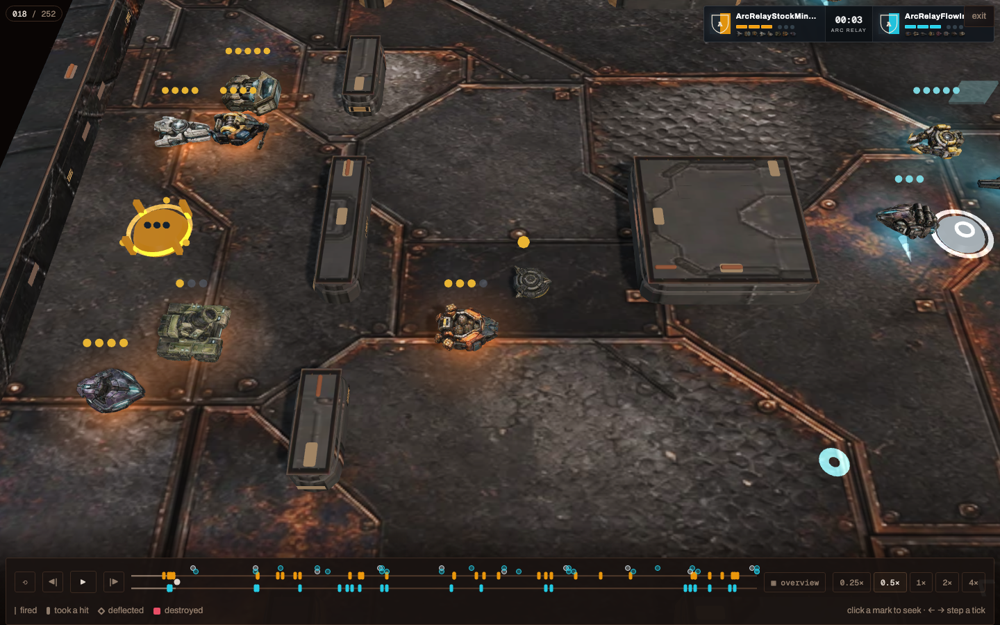
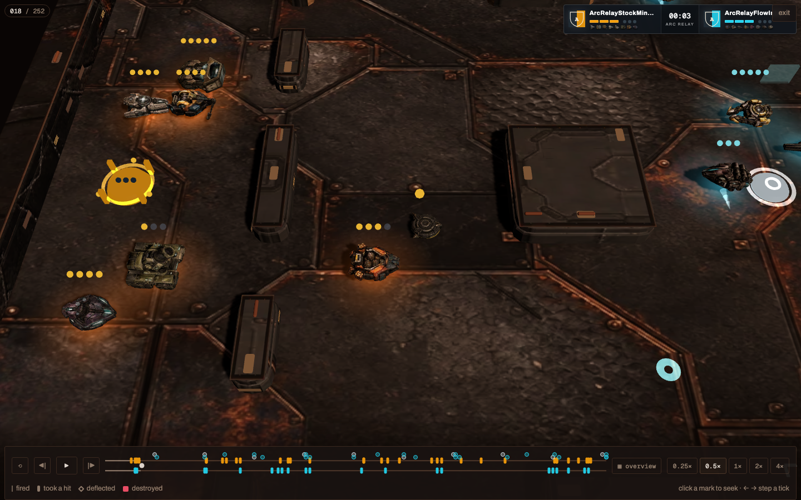
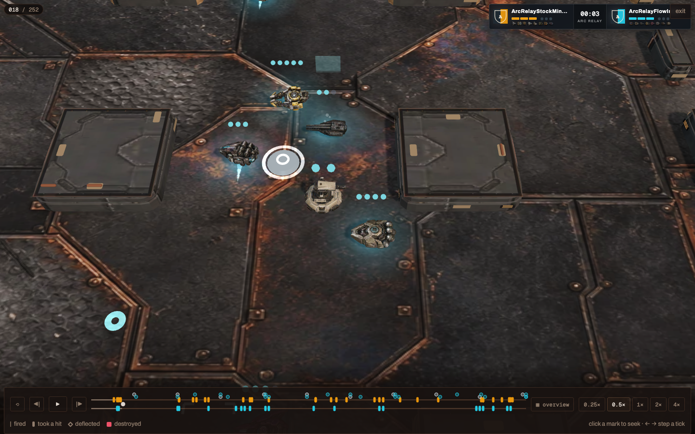
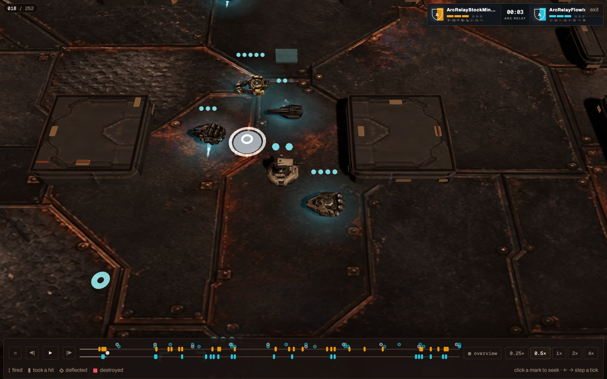
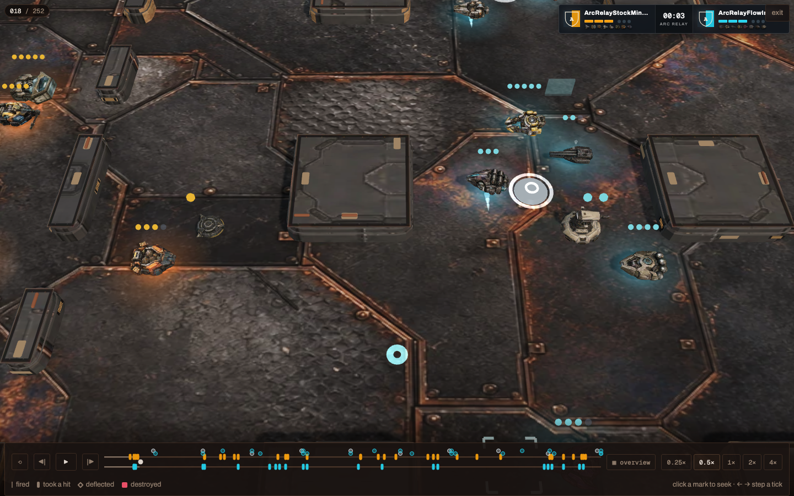
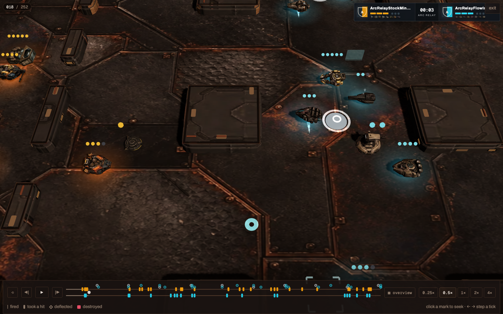
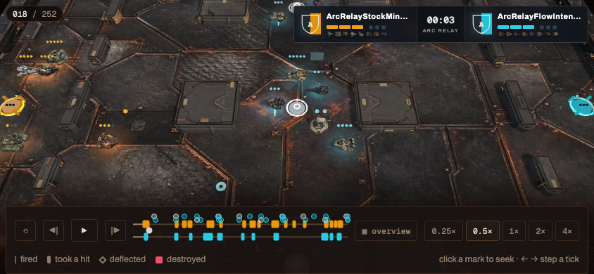
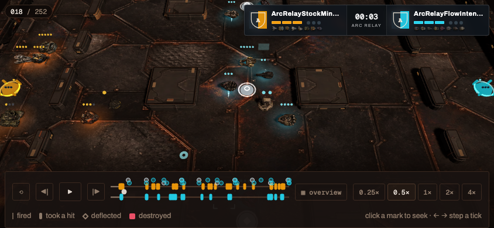

Minesmith + Trip Node


CURRENTCANDIDATEDrag each wipe. Left is the current Ember Forge lighting; right is the restrained candidate. The shipping GLBs, materials, replay, authoritative tick, renderer camera, and browser scale are identical.
The candidate restores useful metal planes and edge separation, but it cannot erase dark strokes baked into the old textures. This is a meaningful low-cost improvement, not a total model-quality cure.


CURRENTCANDIDATE

CURRENTCANDIDATE

CURRENTCANDIDATE

CURRENTCANDIDATE